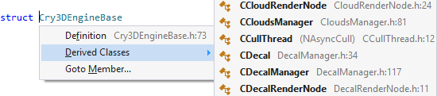

Goto Related
Use Goto Related (Shift+Alt+G) to jump to locations related to the current symbol. Locations are available for most symbols and vary with symbol type. For example, jump directly from a class to one of its derived classes.

Locations include base classes, base methods, constructors, declarations, definitions, derived classes, derived methods, and VA Hashtags.